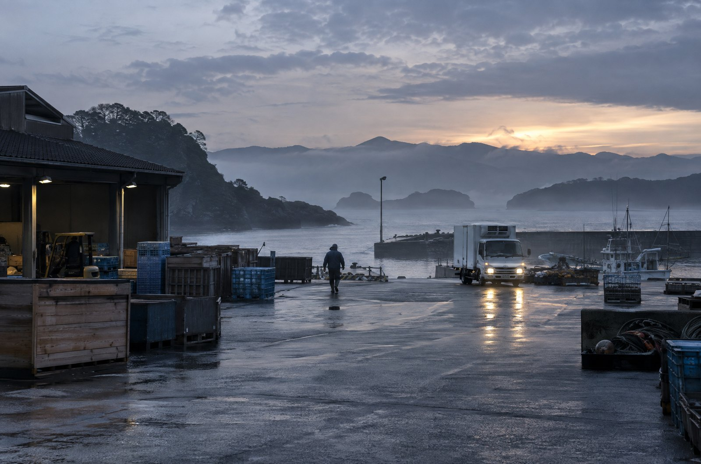
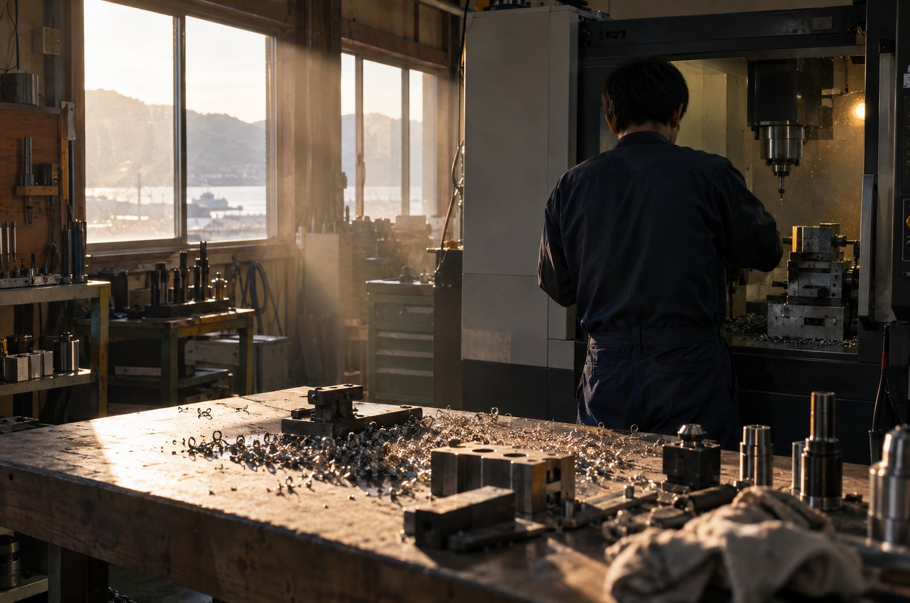
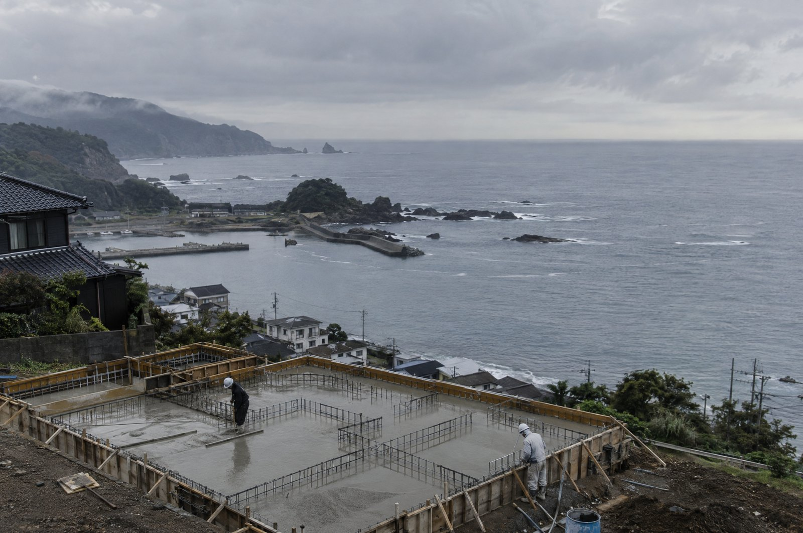
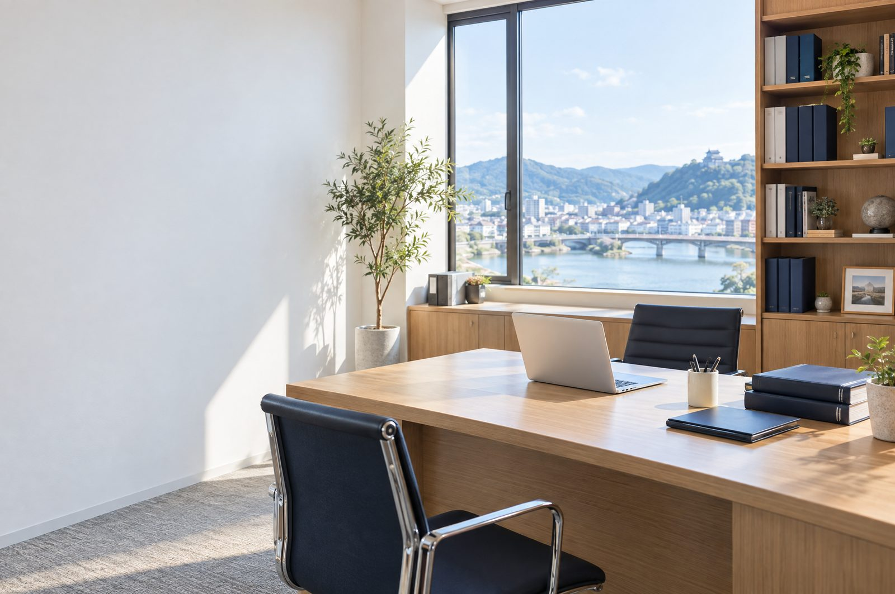
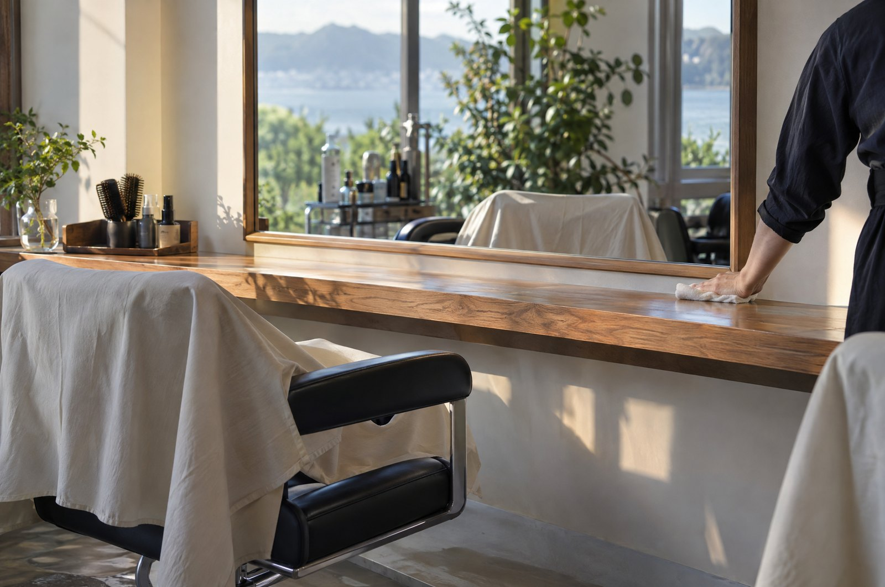
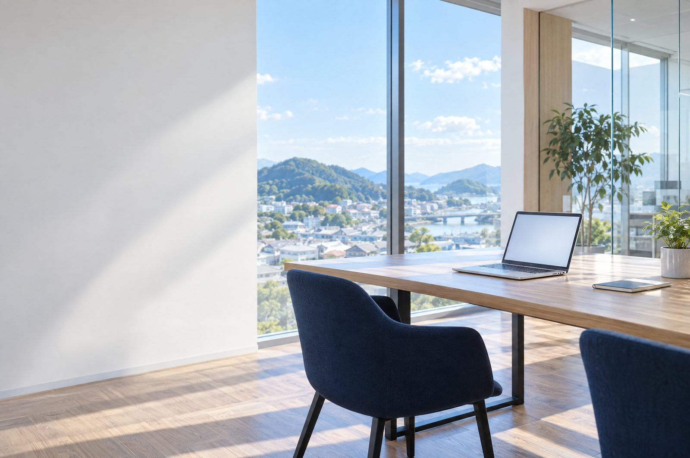
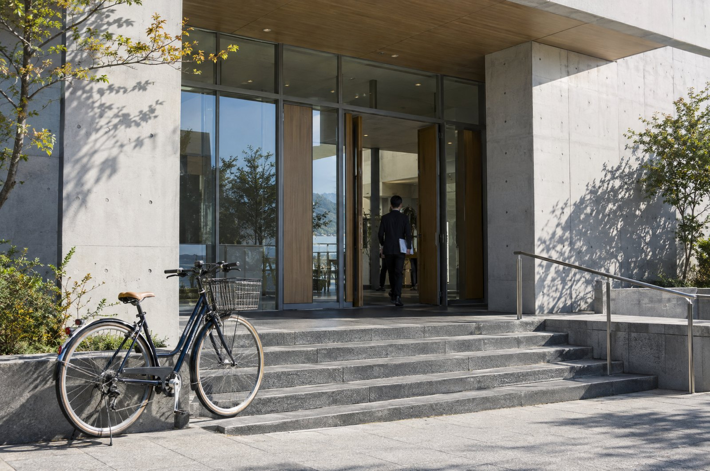

01 — まずは、話すところから
WITH YOU.同じ画面を見て、
一緒に進める。
経営者とも、担当者とも。
実際の仕事を前に、AIの使い方を決めていきます。
会社のことを聞く。
そこから、AIの使い方を考える。
02 — 実績
和歌山でも、始まっています







写真は横に送れます →
写真は各業種のイメージです業種を問わず、経営者から担当者まで。
自社の事業でも、毎日AIを使っています。
01経営者から、
担当者まで。
担当者まで。
社長の判断も、現場の入力も。同じ会社の中で、使う人ごとに伴走します。
02講座と登壇も。
法人研修、個人講座、地域での講演。使い方を伝える仕事も続けています。
03システム構築も、
AIエージェント構築も。
AIエージェント構築も。
相談にとどまらず、業務の仕組みやAIエージェントを作るところまで手がけます。
業種は実際の支援先です。社名は掲載していません。写真はAIで生成したイメージで、実際の支援先の場所ではありません。成果を一律に保証するものではありません。
03 — 誰と進めるか
BUSINESS × AI × FIELD経営のことも、
相談できる。
自分でも会社を営みながら、AIを毎日使う。
技術だけでなく、経営の判断から一緒に考えます。
01経営の目的から、考える。
02自分でも試し、技術を見極める。
03現場で使う人と、進める。
できることも、確かめる必要があることも。
丁寧に見極め、会社に合う進め方を提案します。
04 — 頼めること
THREE WAYS FORWARD会社に合う、進め方を。
どれを頼むか、決めていなくても大丈夫です。 まずは話すことから
05 — 費用の目安
ALL PRICES INCLUDE TAX支援内容と、
料金。
必要な支援を、必要な範囲で。
そのほかの内容も、お気軽にご相談ください。
| サービス | 料金 |
|---|---|
| 法人様 AI伴走支援小規模アプリの開発込み | 月額33万円 |
| 中規模アプリ開発 | 330万円〜 |
| 法人様 AI研修 | 月額16.5万円 |
| そのほか随時の講座開催、AIエージェント構築など | 応相談 |
※ 料金はすべて税込です。
06 — 最初の一歩
LET'S TALK.会社のこれからを、
話すところから。
まだ、何を頼むか決まっていなくても。
話しながら、進め方を一緒に考えます。
- 01話す
- 02見立てを聞く
- 03頼むかを決める
相談は、メールで受け付けています。
my@morethansix.jp仕事に、誇りを。
会社の未来に、楽しみを。お客様と地域に、もっと役立つ会社へ。